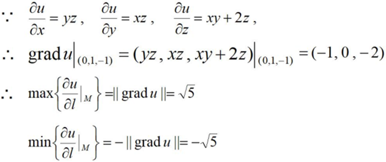

对于一元函数y=f(x)只存在y随x的变化，但是二元函数z=f(x,y)存在z随x变化的变化率，随y变化的变化率，随x﹑y同时变化的变化率。如下图所示
1、偏导数定义
设函数$z=f(x,y)$在点(x0,y0)的某个邻域内有定义，定y=y0，一元函数$f(x_{0},y_{0})$在点x=x0处可导，即极限$\lim\limits_{\Delta x \rightarrow 0 }\frac{f(x_{0}+\Delta x,y_{0})-f(x_{0},y_{0})}{\Delta x}=A$。
则称A为函数$z=f(x,y)$在点(x0,y0)处关于自变量x的偏导数。记作：$f_{x}(x_{0},y_{0})$、$\frac{\partial z}{\partial x}\left| _{\begin{smallmatrix} x={{x}_{0}} \\ y={{y}_{0}} \end{smallmatrix}} \right.$、$\frac{\partial f}{\partial x}\left| _{\begin{smallmatrix} x={{x}_{0}} \\ y={{y}_{0}} \end{smallmatrix}} \right.$或者$z_{x}\left| _{\begin{smallmatrix} x={{x}_{0}} \\ y={{y}_{0}} \end{smallmatrix}} \right.$
2、几何意义：
偏导数$f_{x}(x_{0},y_{0})$就是曲面被平面$y=y_{0}$所截得的曲线在点M0处的切线M0Tx对x轴的斜率，偏导数$f_{y}(x_{0},y_{0})$就是曲面被平面$x=x_{0}$所截得的曲线在点M0处的切线M0Ty对y轴的斜率。如下图所示
3、例题
求$f(x,y)=x^{2}+3xy+y^{2}$在点（1，2）的偏导数。
1、介绍
在函数定义域的内点，对某一方向求导得到的导数。一般为二元函数和三元函数的方向导数，方向导数可分为沿直线方向和沿曲线方向的方向导数。现在假设如下图所示，有两火苗分别沿x、y轴蔓延，问蚂蚁沿什么方向跑才能存活？
可以很容易想到沿矩形的对角线跑。现在有函数$z=f(x,y)$
可以得出距离$\left | PP' \right |=\rho =\sqrt{(\Delta x^{2})+(\Delta y^{2})}$，然后可以得出函数值的增量$\Delta z=f(x+\Delta x,y+\Delta y)-f(x,y)$。
如果函数的增量，与这两点距离的比例存在，则称此为在P点沿着L的方向导数，用公式表达就是$\frac{\partial f}{\partial l}=\lim\limits_{\rho \rightarrow 0 }\frac{f(x+\Delta x,y+\Delta y)-f(x,y)}{\rho }$
特别的，函数$f(x,y)$在X轴正向$\vec{e_{1}}$={1,0}，Y轴正向$\vec{e_{2}}$={0,1}的方向导数分别为$f_{x},f_{y}$，负方向导数为$-f_{x},-f_{y}$
2、定理
如果函数$z=f(x,y)$在点$P(x,y)$是可微分的，那么在该点沿任意方向L的方向导数都存在，公式表达为$\frac{\partial f}{\partial l}=\frac{\partial f}{\partial x}\cos \varphi +\frac{\partial f}{\partial y}\sin \varphi $，$\varphi $为X轴到L的角度。
3、例题
求函数$z=xe^{2y}$在点$P(1,0)$处沿从点$P(1,0)$到点$Q(2,-1)$的方向的方向导数。
示意图如下：
求解过程如下：
1、梯度
函数$z=f(x,y)$在平面域内具有连续的一阶偏导数，对于其中每一个点$P(x,y)$都有向量$\frac{\partial f}{\partial x}\vec{i}+\frac{\partial f}{\partial y}\vec{j}$，则其称为函数在点P的梯度。梯度的本意是一个向量（矢量），表示某一函数在该点处的方向导数沿着该方向取得最大值，即函数在该点处沿着该方向（此梯度的方向）变化最快，变化率最大（为该梯度的模）。用公式表达来就是：
$gradf(x,y)=\frac{\partial f}{\partial x}\vec{i}+\frac{\partial f}{\partial y}\vec{j}$。
设$\vec{e}=\cos \varphi \vec{i}+\sin \varphi \vec{j}$是方向L上的单位向量。
由方向导数公式可知：$\frac{\partial f}{\partial l}=\frac{\partial f}{\partial x}\cos \varphi +\frac{\partial f}{\partial y}\sin \varphi=\left \{ \frac{\partial f}{\partial x}, \frac{\partial f}{\partial y}\right \}\cdot \left \{ \cos \varphi ,\sin \varphi \right \}=gradf(x,y)\cdot \vec{e}=\left | gradf(x,y) \right |\cos\theta $。
其中$\theta =(gradf(x,y),\vec{e})$。
2、结论
只有$\cos (gradf(x,y),\vec{e})=1$，$\frac{\partial f}{\partial l}$才有最大值。
函数在某点的梯度是一个向量，它的方向与方向导数最大值取得的方向一致，从而而它的模正好是最大的方向导数，也就是方向导数的最大值。
3、例题
设$u=xyz+x^{2}+5$，求grad$u$，并求在点$M(0,1,-1)$处方向导数的最大（小）值。

4、小结
（1）、方向导数的概念，注意方向导数与一般所说偏导数的区别
（2）、注意梯度其实是一个向量。
（3）、方向导数与梯度的关系，梯度的方向就是函数f(x，y)在这点增长最快的方向，梯度的模就是方向导数的最大值。
1、介绍
微积分诞生于17世纪，主要帮助人们解决各种速度，面积等实际问题，如下图所示，怎么才能求得曲线的面积呢？
首先对于一个矩形来说，我们可以轻松求得其面积，那能不能用矩形代替曲线形状呢？如果能行的话，那应该用多少个矩形来代替曲线呢？
在ab之间插入若干个点，这样就得到了n个小区间，这样的话每一个小矩形的面积为：$A_{i}=f(\xi _{i})\Delta x_{i}$，这样的话对每个小矩形的面积求和的话就可以近似得到曲线的面积：$A\approx \sum\limits_{i=1}^{n}f(\xi _{i})\Delta x_{i}$
当分割无限加细，每个小区间的最大长度为$\lambda $，此时$\lambda \rightarrow 0$。由此可得曲线的面积为：$A=\lim\limits_{\lambda \rightarrow 0 }\sum\limits_{i=1}^{n}f(\xi _{i})\Delta x_{i}$
从求和角度来看，我们需要尽可能的将每一个矩形的底边无穷小，而莱布尼兹为了体现求和的感觉，给S拉长了，简写成$\int f(x)dx$
2、微分：
由于无穷小的概念，dx,dy都叫做微分。所谓微积分就是把这些微分积起来。
微分是什么？其实很简单，用两个式子就可以很简单的描述了：$\lim\limits_{\Delta x \rightarrow 0 }dy=0,\lim\limits_{\Delta x \rightarrow 0 }dx=0$
3、定积分
当|Δx|—>0时，总和S总是趋于确定的极限I，则称极限I为函数f(x)在曲线[a，b]上的定积分
其中，积分值和被积函数与积分曲线有关，与积分变量字母无关。
当函数f(x)在区间[a，b]上的定积分存在时，称f(x)在区间[a，b]上可积。
4、定积分几何含义
面积的正负值：$\begin{matrix}f(x)>0, & \int_{a}^{b}f(x)dx=A\\ f(x)<0, & \int_{a}^{b}f(x)dx=-A\end{matrix}$
也就是说如果定积分的值为正值，那它就表示曲边梯形的面积，如果求出来是负值的话，那它就表示曲边梯形的面积的负值
5、定积分性质：
1、$\int_{a}^{b}[f(x)\pm g(x)]dx=\int_{a}^{b}f(x)dx\pm \int_{a}^{b}g(x)dx.$
2、$\int_{a}^{b}kf(x)dx=k\int_{a}^{b}f(x)dx$，k为常数。
3、假设a<c<b，则$\int_{a}^{b}f(x)dx=\int_{a}^{c}f(x)dx+\int_{c}^{b}f(x)dx$。
4、如果在区间[a，b]上$f(x)\geqslant 0$，则$\int_{a}^{b}f(x)dx\geqslant 0.(a<b)$。